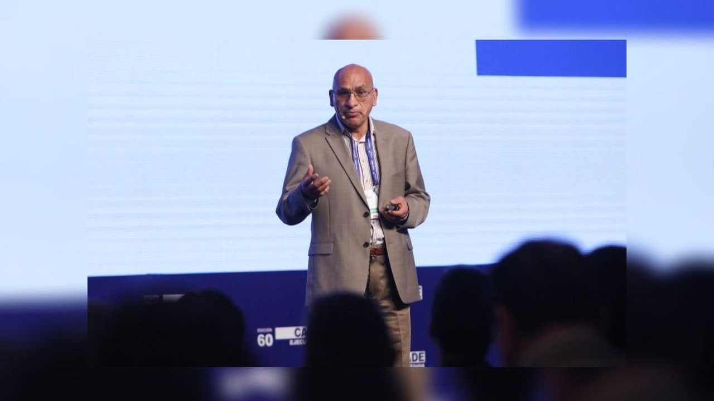
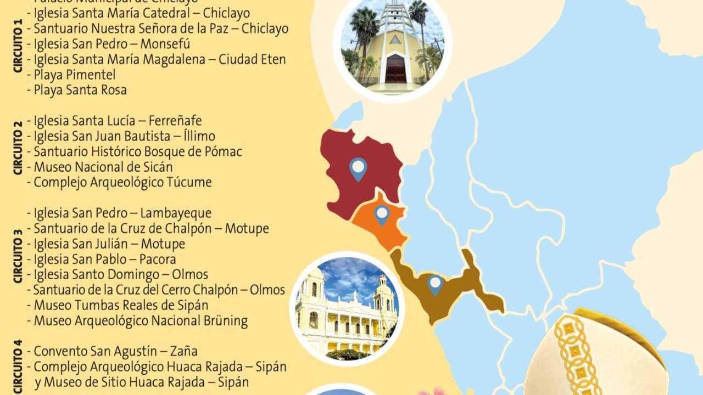

La Superintendencia Nacional de Aduanas y de Administración Tributaria (Sunat) estableció facilidades tributarias excepcionales para los contribuyentes del sector textil y confecciones, así como para los subsectores pesca y acuicultura, que vienen afrontando dificultades económicas por los efectos del fenómeno El Niño.




La Superintendencia Nacional de Aduanas y de Administración Tributaria (Sunat) estableció facilidades tributarias excepcionales para los contribuyentes del sector textil y confecciones, así como para los subsectores pesca y acuicultura, que vienen afrontando dificultades económicas por los efectos del fenómeno El Niño.
Al iniciar su homilía, el sumo pontífice expresó su público agradecimiento al ex arzobispo de Cusco, monseñor Richard Daniel Alarcón Urrutia, quien falleció recientemente y quien contribuyó a preparar la visita apostólica del santo padre a la Ciudad Imperial.
La visita del papa León catorce al Perú incluirá recorridos por distintas ciudades del país, con puntos específicos para que los fieles puedan acercarse y verlo durante sus desplazamientos.
La IA ya no solo responde: ahora actúa en tu nombre Google desactivará sus herramientas de IA para escolares, tras recibir críticas Seguir en Guardar Enseñar sobre inteligencia artificial no significa únicamente aprender a utilizar herramientas digitales.
El Ejecutivo declaró en reorganización el Ministerio de Justicia y Derechos Humanos (Minjusdh) y el Organismo Especializado para las Contrataciones Públicas Eficientes (OECE), mediante dos decretos supremos publicados este domingo 15 de noviembre en el diario oficial El Peruano.
Dos sismos de magnitudes 3.8 y 3.4 se registraron durante la madrugada de este domingo 15 de noviembre en las regiones de Áncash y Puno, respectivamente, según informó el Instituto Geofísico del Perú (IGP), a través del Centro Sismológico Nacional (Censis).
En una labor conjunta entre los gobiernos locales, subprefecturas y personal de la División de Orden Público y Seguridad, Divopus Chincha se realizó el operativo denominado “Patrullaje Sin Fronteras”.
Una situación de indignación y preocupación vienen atravesando clientes de la empresa de transportes y encomiendas Shalom, en Pisco, luego de denunciar la desaparición de una de las diez maletas que enviaron durante un viaje con destino a Piura y Ecuador.
En septiembre, la economía de Perú creció 2.43 por ciento. Con estas cifras, a septiembre de este año, la economía creció 3.18 por ciento.
Cada edición dura menos de dos minutos. En la web tienes el resumen de cada historia y el enlace directo al medio original para leerla completa.
Conoce Olfatecho →